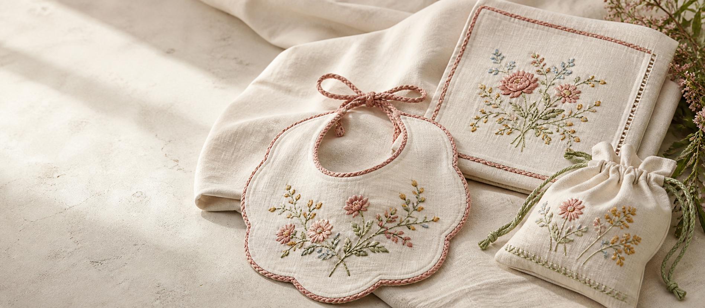

Colección disponible · piezas únicas
Objetos para quedarse.
Piezas terminadas y listas para formar parte de otra historia. El stock es pequeño porque cada una se borda y remata a mano.
Ver la colecciónTextiles bordados con tiempo, intención y detalle
Explora por categoría
Pequeñas piezas, grandes historias.
Elige una categoría para descubrir sus piezas o inspirarte para un encargo personalizado.
Comprar, sin complicaciones
Tu pieza, paso a paso.
Queremos que sepas qué ocurre antes de que tu bordado salga hacia ti.
- 01Elige con calma
Consulta la ficha, añade la pieza a la cesta o pide una versión personalizada.
- 02Confirma tu pedido
Revisamos la disponibilidad y te indicamos los datos de pago antes de prepararlo.
- 03Lo preparamos para ti
Recibes la confirmación cuando la pieza esté lista para acompañarte.

¿No encuentras lo que imaginas?
Hagamos una pieza solo tuya.
Cuéntanos la ocasión, el nombre o el recuerdo. Te proponemos diseño, plazo y presupuesto antes de empezar.